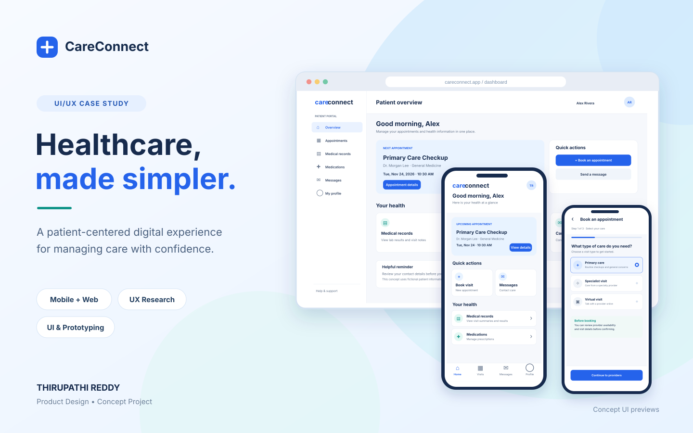
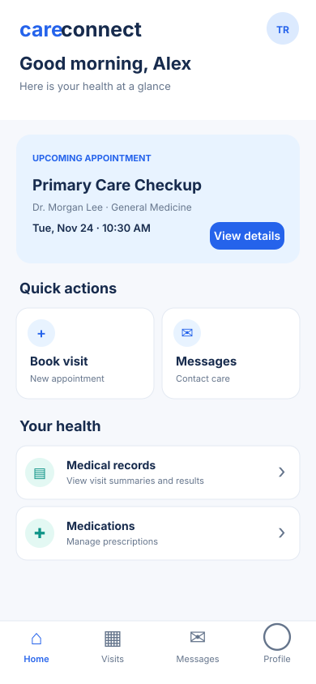

CareConnect.
Healthcare, made simpler — a patient-centered concept for navigating appointments and everyday care.

Care should feel easier to navigate.
Patients may have to work through complicated navigation, unclear appointment availability, and fragmented information when managing healthcare online. CareConnect explores how a clearer appointment flow and accessible interface could reduce that friction.
Design question: How might we simplify everyday care management so patients can book visits with clarity and confidence?
Start with questions, not assumptions.
The initial research plan outlines interviews with 5–7 adults, a review of popular patient portals, provisional personas, and an appointment-booking journey map. These are planning artifacts; participant interviews and formal usability findings have not been presented as completed research.
From dashboard to confirmation.
The concept connects the patient dashboard to visit-type selection, provider and time selection, appointment review, and confirmation. It also explores visits, messages, medications, medical records, and profile navigation.

What comes next?
Interview patients, test the interactive prototype with participants, record observed obstacles, and improve the interface based on evidence. Future portfolio updates will distinguish measured results from concept goals.
Back to projects ↗